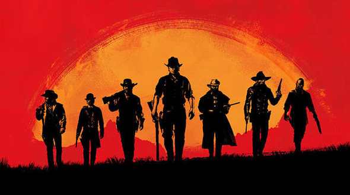
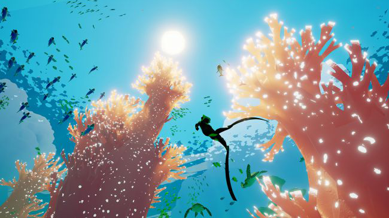
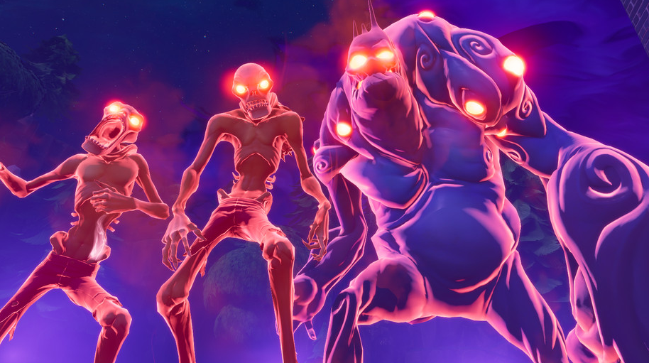

Red Dead Redemption 2 rumors hint at Battle Royale mode
An allegedly leaked document from Trusted Reviews suggests some interesting modes
By Jordan Crook, Feb 6, 2018
Red Dead Redemption 2 has been delayed more than once, with a current slated release for October 2018. That said, RDR2 fans are likely desperate for even the slightest whiff of the game, which is why an allegedly leaked document from Trusted Reviews couldn’t have come at a better time.
The leak, which TechCrunch has not been able to verify, includes information on potential game modes, activities, and features.
As far as online play is concerned, the most fascinating new rumor is that players will be able to participate in a Battle Royale-style game mode. The rising popularity of PlayerUnknown’s Battlegrounds and Fortnite have potentially had an influence on Rockstar, as Battle Royale has not been featured in any of the studio’s previous titles.
Other game modes include Revive and Survive (where two teams try to take each other down while reviving their own downed teammates) and Money Grab (which asks players to collect and stack gold bags as quickly as possible).
As is the case with Rockstar games, players will still be able to roam an open world that is said to be even more ‘alive’ than previous titles. For example, store owners will decorate their storefronts at dawn and shut them down as night falls, according to the leak. Just like GTA’s apartments, RDR2 players will be able to purchase and customize various tents, as well as buy gear and equipment in the open world.Beyond the new game modes and open roaming, there will allegedly be a handful of new activities such as gold-mining, fishing, herding, and weapon challenges. And if that weren’t enough, Trusted Reviews reports that RDR2 will come with a companion app to let players socialize, and even play poker.
TR also reports that there will be new modes of transportation to get around the huge map (which includes familiar territories like Ridgewood and Armadillo). These vehicles include minecarts, handcarts and horse-drawn carriages, which will each have their own strengths and weaknesses such as speed or armor. More interestingly, the document obtained by Trusted Reviews hints at railway trains, complete with NPCs and dialogue, as a way for players to get around the map.
Perhaps most surprising, however, is that Trusted Reviews reports that players can play the game in first-person for both campaign and online.
The 30 best indie games on PC and consoles

Some of the best games are made on smaller budgets
By Dan Griliopoulos, Feb 10, 2018
As time marches on, and gaming faces more advancements in technology and as an art form, the standards for what makes the best indie game evolves. One of the most exciting aspects of indie games, especially in 2018,....more >
Fortnite had 3.4M users on Sunday before it crashed, Epic says

The highest number of concurrent players ever led to some technical difficulties
By Charlie Hall, Feb 8, 2018
Epic Games says that Fortnite, the early access title that blends building with first- and third-person combat, hit a new high player count over the weekend ....more >